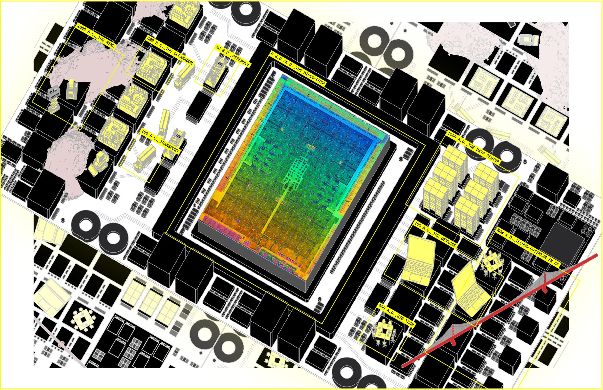
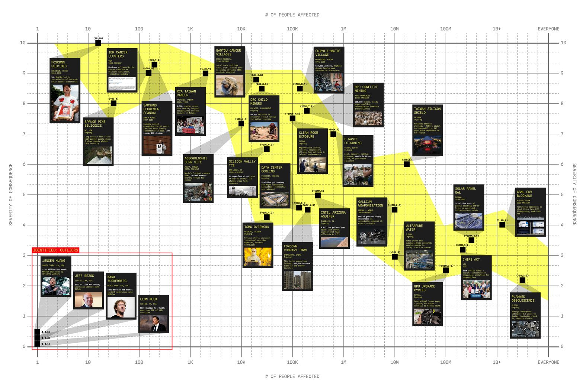
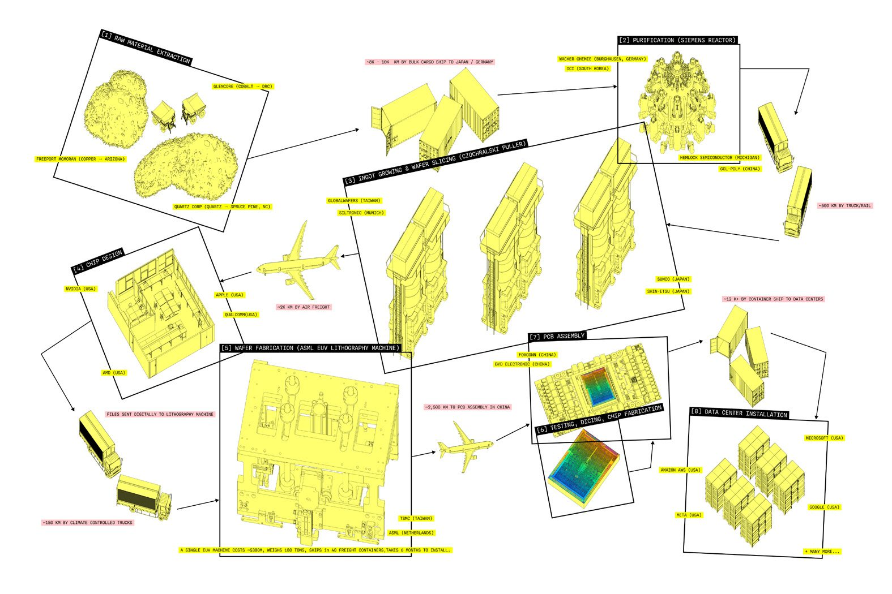
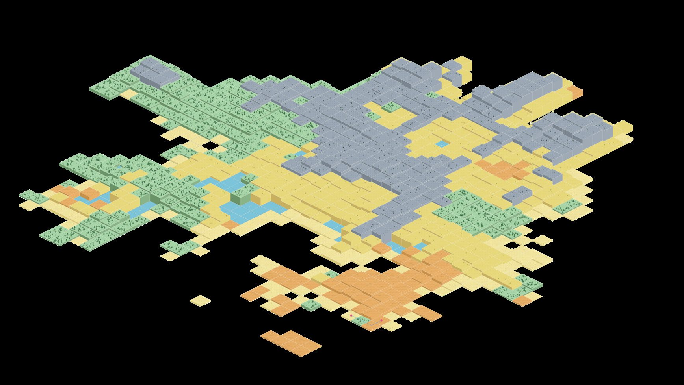
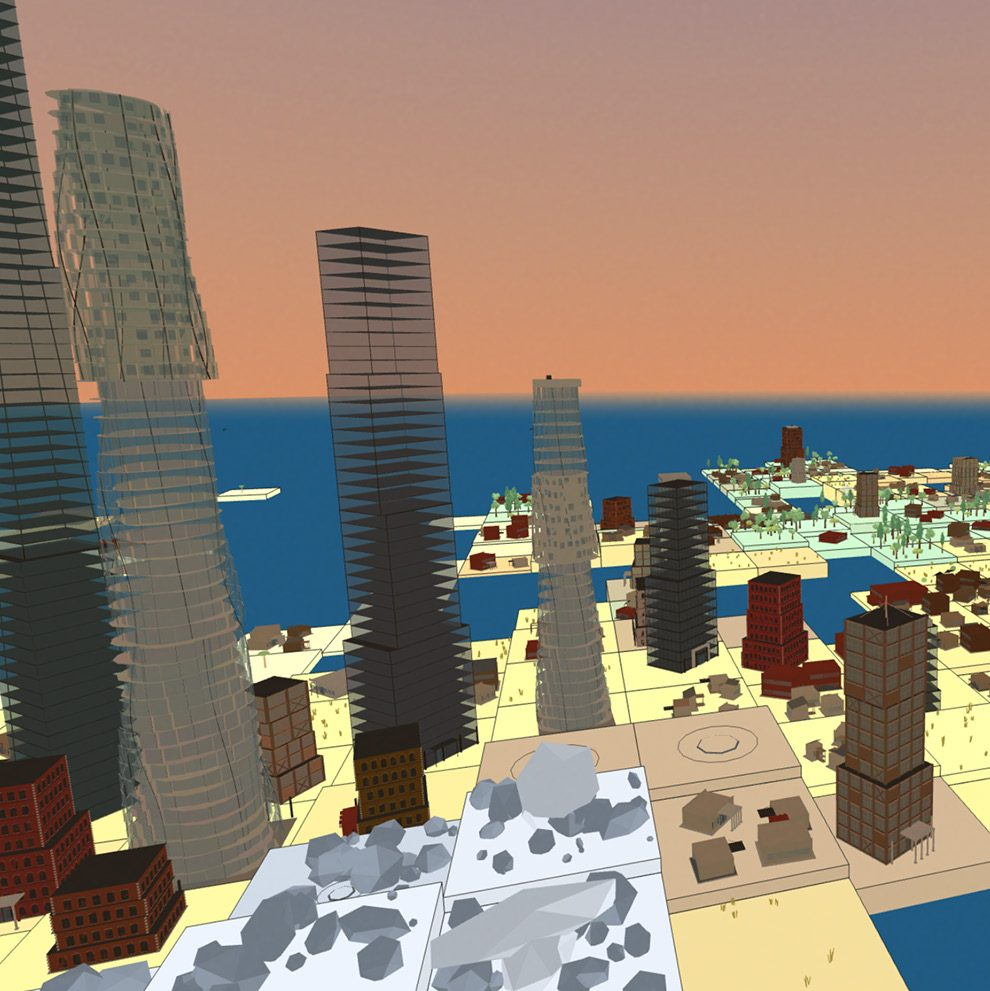
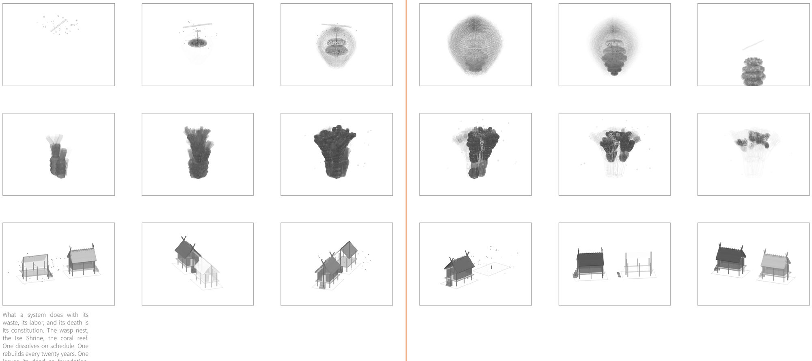
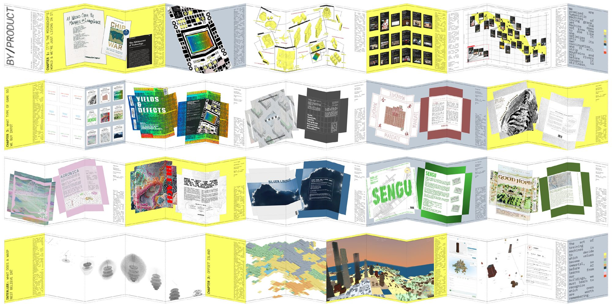

by/product
- semester
- ADV VI "Design As Research", Spring 2026
- type
- Thesis
- instructor
- Lydia Kallipoliti
A method for reading the value systems embedded in what we build, before machines inherit them.
Every made thing leaves a byproduct. A cut produces an offcut. A stone block requires a quarry. A microchip exploits bodily labor. The product is designed to perfection. The byproduct rarely is.
This thesis proposes a methodology for reading the value systems embedded in what we build, before they are inherited by the machines about to dictate the next century. AI is an act of archival. Whatever we feed it becomes the canon, reproduced at a scale no individual architect ever could. A building that externalizes its waste, conceals its labor and has no plan for its own death carries a value system that will be passed down to every model trained on it.
The most urgent task we have as designers is to learn how to follow a thing from origin to consequence, and ask whether its maker planned for the aftereffects. Most have not. BY/PRODUCT asks what it would look like if they had.

the h100
The H100 is the most deliberate object ever made. Its transistors are measured in nanometers. Nothing that comes out of it was designed at all. The supply chain ends where consequences begin (silicosis, leukemia clusters, drained aquifers, engineered obsolescence), distributed across everyone who never signed the transaction.
When severity is plotted against scale, the data resolves into a predictable curve. All except the outliers: men whose personal accumulation exceeds the GDP of most nations, built on labor priced at the margin.


offset island
To build anything, you deplete a natural resource. Every beam requires a tree that once stood. Every foundation generates waste that must go somewhere. The island is finite, and the players must constantly cope with that.


constitutions
What a system does with its waste, its labor and its death is its constitution. The wasp nest, the Ise Shrine, the coral reef. One dissolves on schedule. One rebuilds every twenty years. One leaves its dead as foundation.

